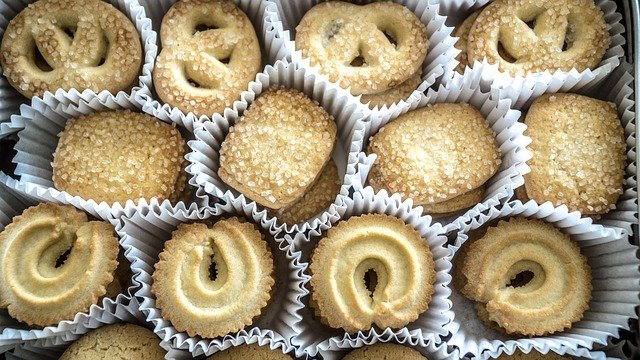

Shortbread is a type of cookie with a high butter content: The traditional recipe is one part sugar, two parts butter and three parts flour; some recipes use a 1:1:1 ratio, and there are variations in between (later recipes added eggs). It has been called the ancestor of all butter cookies. The original shortbreads were made with oatmeal; the more elegant white flour came later and lightened the cookie. The addition of rice flour gives shortbread a grainy, crumbly texture, while cornstarch (corn flour) gives it a more dense texture.
Shortbread originated in Scotland (where cookies are called biscuits) in medieval times. According to EnglishTeaStore.com, Scottish shortbread evolved from medieval biscuit bread, a twice-baked, enriched bread roll dusted with sugar and spices and hardened into a rusk. Eventually, butter was substituted for yeast, and shortbread was born.
Shortbread or shortie is a traditional Scottish biscuit usually made from one part white sugar, two parts butter, and three to four parts plain wheat flour. Unlike many other biscuits and baked goods, shortbread does not contain any leavening, such as baking powder or baking soda. Shortbread is widely associated with Christmas and Hogmanay festivities in Scotland, and some Scottish brands are exported around the world.